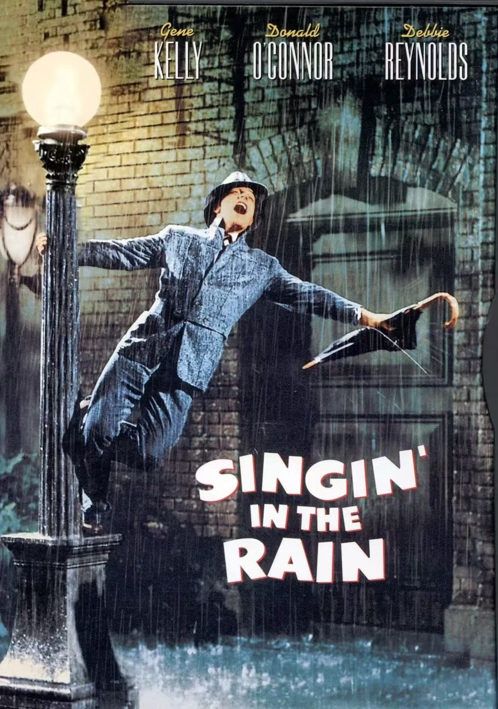
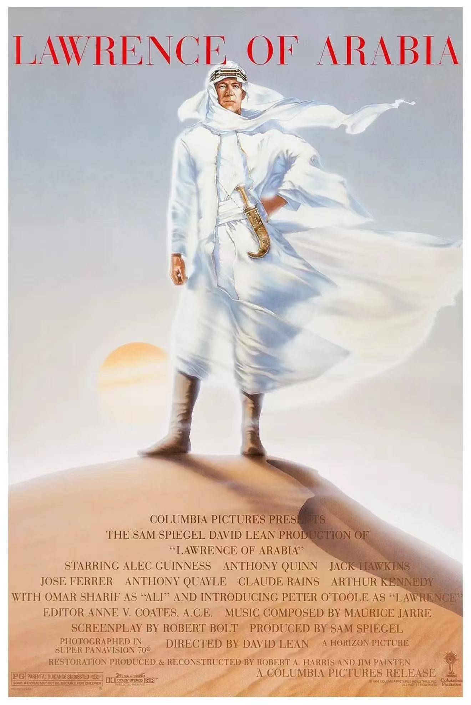
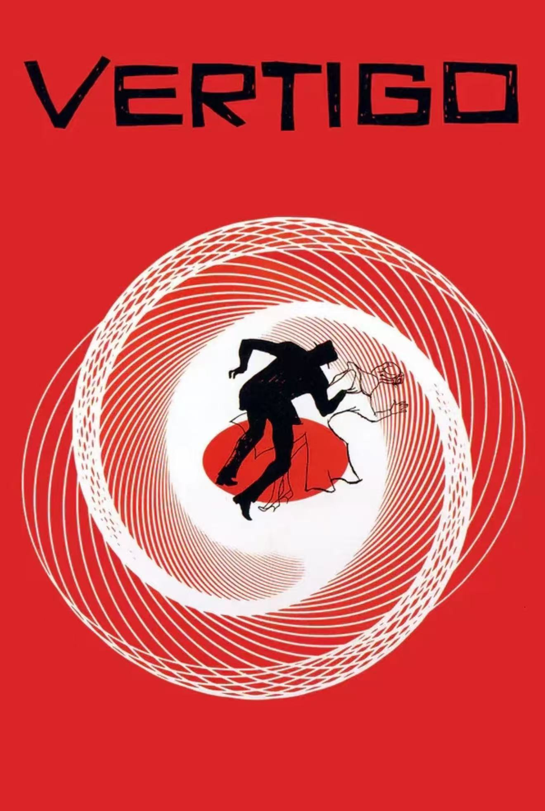

电影库 | Film Library
浏览我们的完整电影收藏 | Browse our complete film collection
找到 12 部电影 | Found 12 movies

卡萨布兰卡 | Casablanca
剧情 | Drama
爱情 | Romance
战争 | War
在二战期间的卡萨布兰卡，一位美国酒吧老板面临是否帮助他的前情人及其丈夫逃离纳粹迫害的艰难抉择。
In WWII Casablanca, an American bar owner faces a moral dilemma when he must choose between helping his former lover and her husband escape the Nazis.

乱世佳人 | Gone with the Wind
剧情 | Drama
爱情 | Romance
历史 | History
美国南北战争期间，任性倔强的南方美女斯嘉丽历经磨难，在动荡年代中努力生存并追求爱情。
A manipulative Southern belle carries on a turbulent affair with a blockade runner during the American Civil War.

罗马假日 | Roman Holiday
喜剧 | Comedy
爱情 | Romance
一位欧洲公主与一位美国记者在罗马浪漫相遇，共度难忘的一天，产生了真挚的感情。
A bored and sheltered princess escapes her guardians and falls in love with an American newsman in Rome.
教父 | The Godfather
犯罪 | Crime
剧情 | Drama
纽约黑手党科莱昂家族的故事，讲述了权力、家族和背叛的复杂关系。
The aging patriarch of an organized crime dynasty transfers control of his clandestine empire to his reluctant son.

雨中曲 | Singin' in the Rain
喜剧 | Comedy
歌舞 | Musical
爱情 | Romance
好莱坞从无声电影向有声电影过渡时期，一位默片明星与合唱队女孩之间的浪漫故事。
A silent film star falls in love with a chorus girl as Hollywood transitions to talkies.

西北偏北 | North by Northwest
悬疑 | Mystery
冒险 | Adventure
惊悚 | Thriller
一位纽约广告主管被误认为是一名政府特工，引发了一系列危险的冒险。
A New York advertising executive is mistaken for a government agent by a group of foreign spies.
公民凯恩 | Citizen Kane
剧情 | Drama
悬疑 | Mystery
报业大亨查尔斯·福斯特·凯恩的一生及其遗产，被认为是电影史上最重要的作品之一。
Following the death of a publishing tycoon, news reporters scramble to discover the meaning of his final utterance.

阿拉伯的劳伦斯 | Lawrence of Arabia
传记 | Biography
冒险 | Adventure
战争 | War
英国军官T.E.劳伦斯在第一次世界大战期间领导阿拉伯部落反抗奥斯曼帝国的史诗故事。
The story of T.E. Lawrence, the English officer who successfully united and led the diverse, often warring, Arab tribes during World War I.

迷魂记 | Vertigo
悬疑 | Mystery
爱情 | Romance
惊悚 | Thriller
一位患有恐高症的退休警探受雇跟踪一位神秘女子，逐渐陷入一个复杂的阴谋之中。
A former police detective juggles wrestling with his personal demons and becoming obsessed with a hauntingly beautiful woman.

现代启示录 | Apocalypse Now
战争 | War
剧情 | Drama
越南战争期间，一名美国陆军上尉奉命沿湄公河而上，寻找并除掉一位叛变的绿色贝雷帽上校。
A U.S. Army officer serving in Vietnam is tasked with assassinating a renegade Special Forces Colonel who sees himself as a god.

热情似火 | Some Like It Hot
喜剧 | Comedy
爱情 | Romance
两位音乐家目睹了情人节大屠杀后，为躲避黑帮追杀而男扮女装加入女子乐队。
After two male musicians witness a mob hit, they flee the state in an all-female band disguised as women.

日落大道 | Sunset Boulevard
剧情 | Drama
黑色电影 | Film-Noir
一位落魄编剧与一位过气的默片女星之间的危险关系，揭示了好莱坞的黑暗面。
A screenwriter develops a dangerous relationship with a faded film star determined to make a triumphant return.